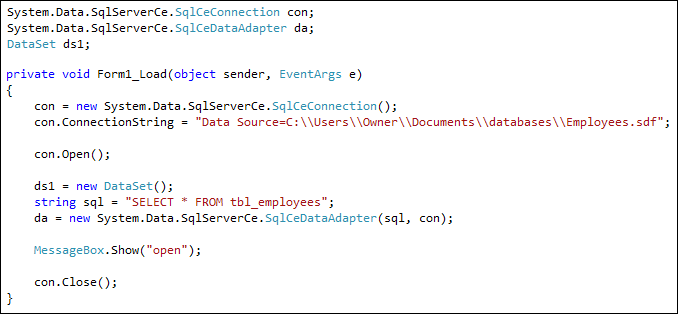

DataSets and DataAdapters
The connection to the database has been made. The next step is to pull the records from our Employees table. To do that, a Dataset and a DataAdapter are needed.
A Dataset is where all your data is held when it is pulled from the database table. Think of it like a grid that you see on a spreadsheet. The Columns in the grid are the Columns from your database table. The Rows represent a single entry in the table.
The Dataset needs to be filled with data. However, because the Dataset and Connection object can't see each other, they need someone in the middle to help them out - the DataAdapter. The DataAdapter will fill the Dataset with records from the database.
So we need to set up two more objects, a Dataset and a DataAdapter. To create a Dataset object, add the following just above the form load event:
DataSet ds1;
Inside of the form load event, create a new object from the Dataset type we've called ds1:
ds1 = new DataSet();
Add the code just after your con.Open line.
For the DataAdapter, add the following outside of the form load event:
System.Data.SqlServerCe.SqlCeDataAdapter da;
We're setting up a DataAdapter variable, here, and calling it da.
Inside of the form load event, we can create a new object from our da variable. Add these two lines just after your ds1 line:
string sql = "SELECT * From tbl_employees";
da = new System.Data.SqlClient.SqlDataAdapter( sql, con );
The first line sets up a string variable called sql. SQL stands for Structured Query Language. It's a language used to pull records from a database, and variants of it are used for all database systems. You use the Structured Query Language on the database itself. (SQL Server's variant is called T-SQL. The T stands for Transact.)
Keywords in SQL are SELECT, UPDATE, WHERE, and a whole lot more besides. The * symbol means "all the records". So we're saying, "Select all the records from the table called tbl_employees".
The DataAdapter object will use your SQL commands to pull the records from the database. But you need to tell it which connection object to use. That's why, in between the round brackets, we have this:
( sql, con );
Our new DataAdapter object will then know what records to pull (sql), and where to pull them from (con).
But here's what your coding windows should look like:

To fill the dataset with records from the database, you use the DataAdapter and issue the Fill command:
da.Fill( ds1, "Workers" );
What this does is to Fill a Dataset called ds1. After the comma, you can type an identifying name for this particular Fill. We've called ours Workers.
After the Fill command has been issued, the records from the SQL command are stored in the Dataset. This, remember, is just like a grid with Columns and Rows.
So add the line to your code. Put it just before the con.Close() line.
In the next part, you'll see how to access the data from the Dataset.